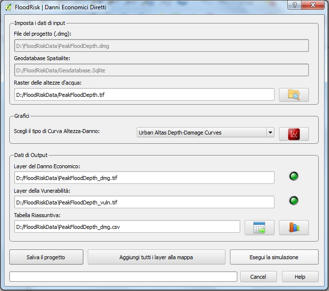

Danni Economici Diretti¶
La finestre Danni Economici Diretti consente di stimare il danno economico diretto atteso per le strutture e per il contenuto dei beni a rishio.

- I dati riguardanti i beni a rischio e la loro vulnerabilità (curve altezza-danno) sono memorizzati nel geodatabase.
- I dati riguardanti il pericolo sono mappe di altezza massime dovute all’inondazione. Questi dati sono output di modelli idraulici 2D e sono caricarti nel sistema tramite un qualsiasi file del tipo GDAL Raster Formats.
- Il database può contenere differenti dipi di curve altezza-danno: prima di eseguire il calcolo occorre scegliere il tipo fra quelli disponibili ed è possibile visionare il Grafico.
- I risultati sono mappe di danno e vulnerabilità per edifici residenziali, commerciali, ed industriali ed una Tabella Riassuntiva dei risultati che può essere mostrata anche in forma grafica (istogramma).
I file dei risultati sono:
Layer dei danni*(_dmg.tif): un file tipo GeoTIFF File Format avente come output due bande:
band1: danni economici attesi per le strutture (Euro al metro quadro) band2: danni economici attesi per il contenuto (Euro al metro quadro) Layer della vulnerabilità (*_vuln.tif): un file tipo GeoTIFF File Format avente come output due bands:
band1: vulnerabilità per le strutture (% of damage) band2: vulnerabilità per le strutture (% of damage) Tabella Riassuntiva (*_dmg.csv): un file tipo csv File Format contenete la tabella dei risultati raggruppato per classi di beni